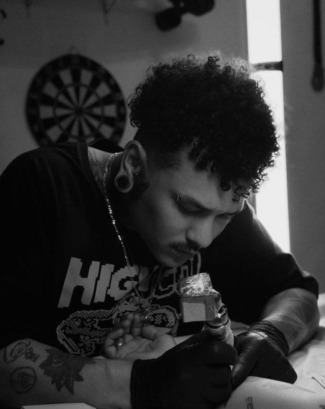
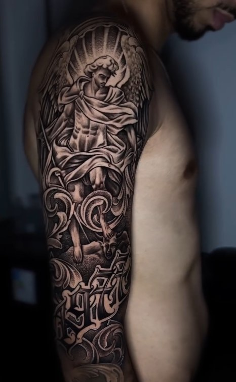
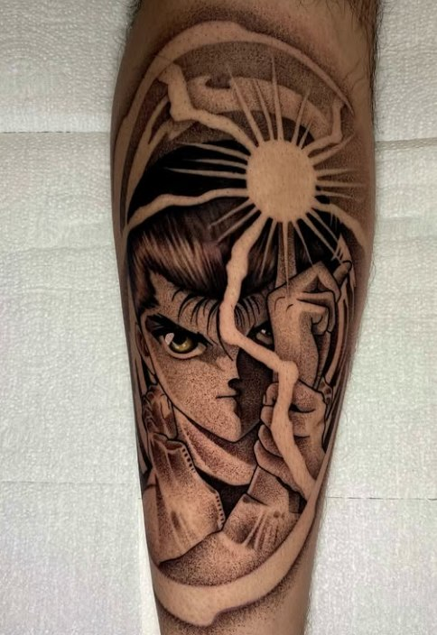
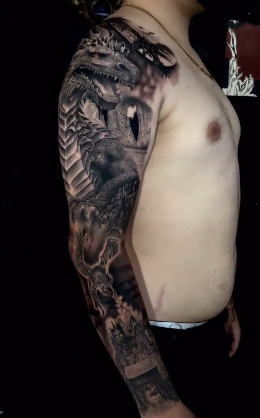
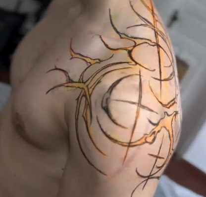
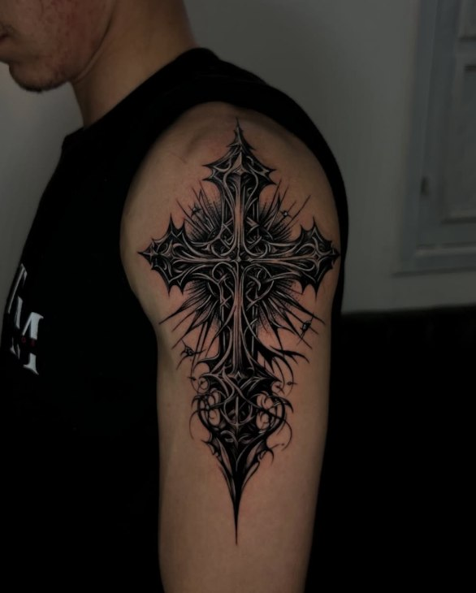
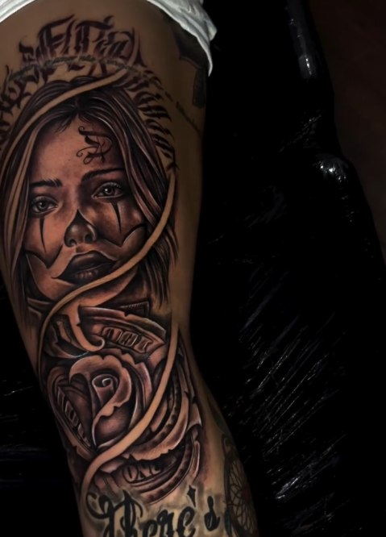
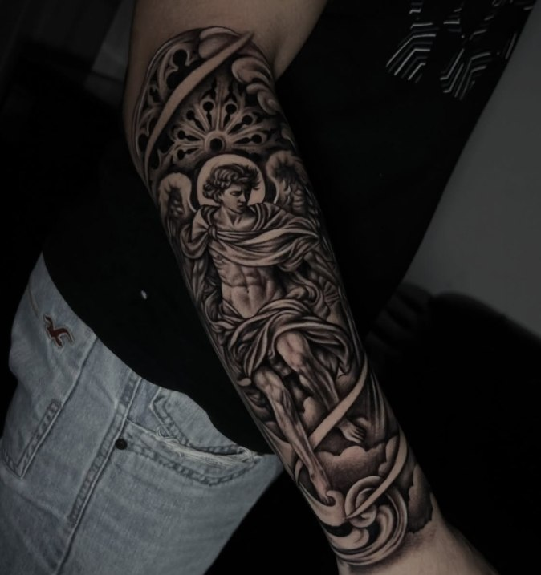
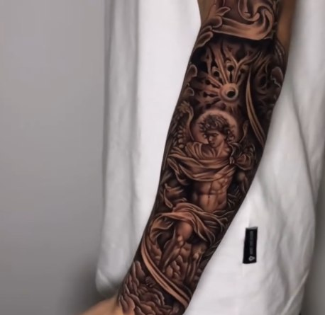
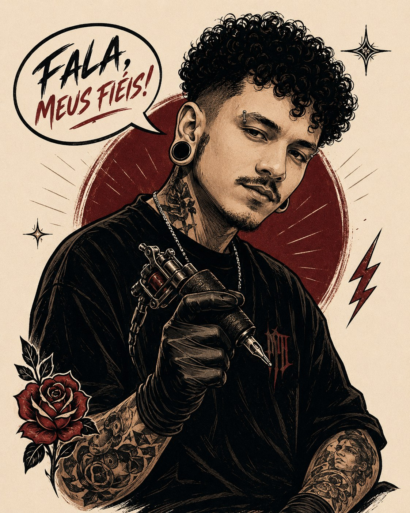

Tatuador · 6 anos de tattoo · Artista premiado
Fala, meus fiéis.
Ideia vira desenho. Desenho vira pele.
O resto é história sua pra contar.

[ 02 — Selected Work ]
Arte que
já virou pele.
Alguns trabalhos. O resto você descobre no estúdio.








O resto
tá na pele
por aí.
[ 03 — Styles ]
Não tem
uma caixinha.
Cada projeto pede um caminho. O estilo é ferramenta, não limite.
Não é
só tinta.
É uma ideia que vai ficar com você.
[ 04 — About ]
O Mano.
Há 6 anos transformando ideia em desenho e desenho em pele.
O Mano Deyvid é tatuador e artista premiado. Trabalha com projetos de estilos diferentes — do anime ao realismo, do blackwork ao ornamental — sempre procurando a solução que funciona pra ideia e pro corpo de quem vai carregar a tattoo.
Cada projeto começa numa conversa. Sem fórmula, sem linha de produção: o desenho nasce pro seu corpo, e só pro seu.
Também é CEO da PlataformaSete.
6anos de tattoo
★artista premiado
∞estilos, um traço
[ 05 — FAQ ]
Sem mistério.
O que todo mundo pergunta antes de marcar.
Tatuador há 6 anos, artista premiado e CEO da PlataformaSete. Mas aqui dentro do estúdio, é simples: um artista trabalhando na sua ideia.
Me manda sua ideia e suas referências. A gente conversa, entende o projeto e eu te passo o orçamento certinho.
Claro. Pode mandar referência tranquilo. Ela ajuda a entender o caminho que você quer seguir e a partir daí a gente trabalha a ideia.
Sim. Depois de alinhar sua ideia, o desenho é desenvolvido pensando no projeto e em como ele vai funcionar no seu corpo.
Anime, realismo, black & grey, blackwork, gothic, ornamental e projetos autorais. Se a sua ideia pede outro caminho, a gente conversa e encontra a melhor forma de fazer.
Depois que a ideia e o orçamento estão alinhados, você paga metade do valor para seguirmos com o desenho e reservarmos o projeto. No dia da tattoo, depois da sessão, é pago o restante.
Metade na hora de reservar o projeto e desenvolver o desenho, e o restante no dia, depois da sessão. Os detalhes a gente combina direto na conversa.
Faço. Fechamento de braço, projetos grandes, continuação de trabalho que já existe — me manda o que você tem em mente e a gente planeja por etapas.
No dia da sessão você sai com todas as orientações de cuidado explicadas, e qualquer dúvida depois é só chamar. Não fica na mão.
Tranquilo, meu fiel. Me manda o que você já tem na cabeça, mesmo que ainda esteja meio solto. A gente conversa e encontra um caminho juntos.
[ — Por quê ]
Por que tatuar
com o Mano?
-
Arte feita para o projeto
Nada de catálogo pronto. O desenho nasce da sua ideia e do lugar do corpo onde ele vai viver.
-
6 anos vivendo tattoo
Seis anos de máquina na mão, estudando traço, pele e composição todos os dias.
-
Versatilidade de estilos
Anime, realismo, blackwork, gothic, ornamental. O estilo serve à ideia — nunca o contrário.
-
Do desenho à pele
O mesmo artista que cria a arte é quem tatua. Sem intermediário, sem telefone sem fio.
-
Atendimento sem complicação
Conversa direta, orçamento claro, agendamento simples. Você fala com o Mano, não com um robô.
-
Acompanhamento do projeto
Da primeira mensagem até depois da sessão, o projeto é acompanhado de perto. Não fica na mão.
[ 06 — Process ]
Da ideia
à pele.
- 01
Ideia
Você me manda sua ideia e suas referências.
- 02
Orçamento
O projeto é analisado e o orçamento definido.
- 03
Desenho + sinal
Depois do alinhamento, é pago metade do valor e o desenho é desenvolvido.
- 04
Sessão
Dia de tatuar. A arte sai do papel e entra na pele.
- 05
Finalização
Depois da sessão, é pago o restante — e você sai com as orientações de cuidado.
[ 07 — Contact ]
Bora marcar
essa tattoo?
Manda sua ideia. Fica tranquilo — a gente resolve junto.
Chamar o Manoou pelo direct: @manodeyvid_tattoo
